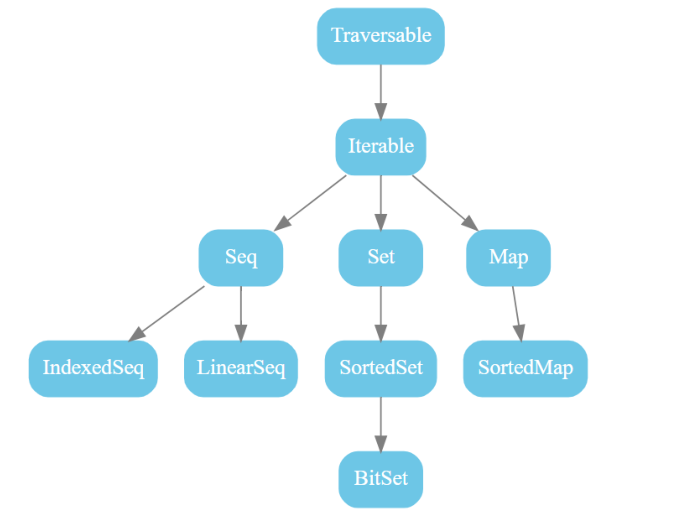
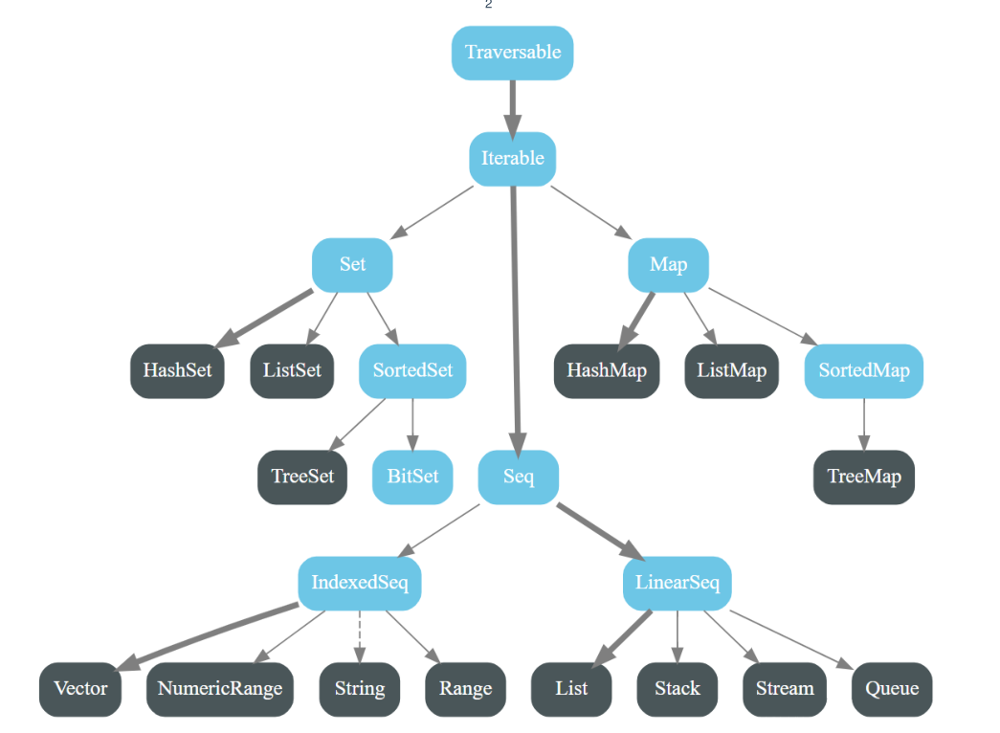

Scala #
基本常识 #
什么是Scala？ #
Scala 是一种运行在 JVM上的函数式的面向对象语言。
优点 #
- Scala 是兼容的：兼容 Java，可以访问庞大的 Java 类库；
- Scala 是精简的：Scala 表达能力强，一行代码抵得上多行 Java 代码，开发速度快。可以让程序短小精悍，看起来更简洁，更优雅；
- Scala 是静态类型的：Scala 拥有非常先进的静态类型系统，支持类型推断和模式匹配等；
- Scala 可以开发大数据应用程序：例如 Spark、Flink 等。
基础要点 #
常量与变量 #
常量关键词：val
变量关键词：var
字符串 #
三引号 #
作用：支持多行代码一起写，不需要拼接，直接在三引号内写即可。
举例：
val|var 变量名 = """
字符串1
字符串2
"""
插值表达式 #
作用：可以直接输出变量的值，不用拼接
举例：
val|var 变量名 = s"${变量|表达式}字符串"
惰性赋值 #
作用：定义完不会立马加载到JVM中。防止JVM内存消耗过大。（只有常量能使用）
举例：
lazy val 变量名 = 表达式
类型转换 #
强制转化：
val|var 变量名 = 值.toXxx // 例如强转为 Int 则为 toInt
for循环 #
语法格式：
for (i <- 表达式|数组|集合) {
// 语句块(也叫循环体)
}
举例：
// 打印十次 HelloWorld
for (i <- 1 to 10) {
println(s"HelloWorld! ${i}")
}
守卫 #
for 表达式中，可以添加 if 判断语句，这个 if 判断就称之为守卫。通过守卫可以让 for 表达式更加简洁。
语法格式：
for (i <- 表达式|数组|集合 if 表达式) {
// 语句块
}
举例：
// 打印 1~10 的偶数
for (i <- 1 to 10 if i % 2 == 0) {
println(i)
}
yield 生成器 #
yield 是一个类似 return 的关键字，但是 yield 不会结束函数，而 return 会结束函数。如果在循环结构中使用了 yield，相当于迭代一次遇到 yield 时就将 yield 后面(右边)的值放入一个集合，最后整个循环结束时将集合返回。我们把使用了 yield 的 for 表达式称之为推导式。yield不仅可以使用于 for 循环中，还可以使用于某个函数的参数，只要这个函数的参数允许被迭代。
举例：
// 将 1~10 的偶数返回
val result = for (i <- 1 to 10 if i % 2 == 0) yield i
println(result)
// 生成 10，20，...，90，100
val result = for (i <- 1 to 10) yield i * 10
println(result)
实现 break #
// 先导包
import scala.util.control.Breaks._
// 当 i == 5 时结束循环
breakable {
for (i <- 1 to 10) {
if (i == 5) break() else println(i)
}
}
实现continue #
// 先导包
import scala.util.control.Breaks._
// 当 i == 5 时跳过当次循环，继续下一次
for (i <- 1 to 10) {
breakable {
if (i == 5) break() else println(i)
}
}
方法 #
语法格式：
def 方法名(参数名:参数类型, 参数名:参数类型, ...): [返回值类型] = {
// 语句块(方法体)
}
函数 #
语法格式：
// 因为函数是对象，所以函数有类型：(函数参数类型1, 函数参数类型2,...) => 函数返回值类型
val 函数名: (函数参数类型1, 函数参数类型2,...) => 函数返回值类型 = (参数名:参数类型, 参数名:参数类型, ...) => {
函数体
}
方法和函数的区别：
- 方法是隶属于类或者对象的，在运行时，它会被加载到 JVM 的方法区中
- 函数是一个对象，继承自 FunctionN，函数对象有 apply，curried，toString，tupled 这些方法，方法则没有。
Option #
作用：避免空指针问题，有指定的值返回指定的值，没有就返回None。
Scala 中，Option 类型表示可选值。这种类型的数据有两种形式：
-
Some(x) ：表示实际的值
-
None ：表示没有值
举例：
需求：
- 定义一个两个数相除的方法，使用 Option 类型来封装结果。
- 当除数为零时，返回 None；当除数不为零时，返回 Some(相除)。
def division(a: Int, b: Int): Option[Int] = {
// 定义一个两个数相除的方法，使用 Option 类型来封装结果
if (b == 0) { // 当除数为零时，打印异常信息
None
} else { // 当除数不为零时，打印相除结果
Some(a / b)
}
}
val a = 10
val b = 0
val result = division(10, 0)
// 配合 Option 的 isEmpty 方法来检测元素是否为 None
println(result.isEmpty)
// 配合 Option 的 getOrElse 方法返回友好提示
println(result.getOrElse("对不起，除数不能为零"))
面向对象 #
伴生对象 #
一个 class 和 一个 object 具有相同的名字时，这个 object 就被称为伴生对象，这个 class 被称为伴生类。
- 伴生对象和伴生类必须是相同的名字；
- 伴生对象和伴生类在同一个 scala 源文件中；
- 伴生对象和伴生类可以互相访问 private 私有属性。
private[this]访问权限 #
只有当前类能访问，伴生对象无法访问。
apply方法 #

样例类 #
语法：
case class 样例类名(val|var 成员属性1:类型1, 成员属性2:类型2, ...) {}
特点：

特质 #
高级函数 #
至简原则 #
-
方法和函数不建议写 return 关键字，Scala 会使用函数体的最后一行代码作为返回值；
-
方法的返回值类型如果能够推断出来，那么可以省略，如果有 return 则不能省略返回值类型，必须指定；
-
因为函数是对象，所以函数有类型，但函数类型可以省略，Scala 编译期可以自动推断类型；
-
如果方法明确声明了返回值为 Unit，那么即使方法体中有 return 关键字也不起作用；
-
如果方法的返回值类型为 Unit，可以省略等号 = ；
-
如果函数的参数类型能够推断出来，那么可以省略；
-
如果方法体或函数体只有一行代码，可以省略花括号 {} ；
-
如果方法无参，但是定义时声明了 () ，调用时小括号 () 可省可不省；
-
如果方法无参，但是定义时没有声明 () ，调用时必须省略小括号 () ；
-
如果不关心名称，只关心逻辑处理，那么函数名可以省略。也就是所谓的匿名函数；
-
如果匿名函数只有一个参数，小括号 () 和参数类型都可以省略，没有参数或参数超过一个的情况下不能省略 () ；
-
如果参数只出现一次，且方法体或函数体没有嵌套使用参数，则参数可以用下划线 _ 来替代。
举例：
def main(args: Array[String]): Unit = {
//方法和函数不建议写 return 关键字，Scala 会使用函数体的最后一行代码作为返回值；
def method1(a:Int,b:Int):Int={a+b}
val func1:(Int,Int)=>Int=(a:Int,b:Int)=>{a-b}
//方法的返回值类型如果能够推断出来，那么可以省略，如果有 return 则不能省略返回值类型，必须指定；
def method2(a:Int,b:Int)={a+b}
def method3(a:Int,b:Double):Double={
return a+b
}
//因为函数是对象，所以函数有类型，但函数类型可以省略，Scala 编译期可以自动推断类型；
val func2=(a:Int,b:Int)=>{a-b}
//如果方法明确声明了返回值为 Unit，那么即使方法体中有 return 关键字也不起作用；
def method4(a:Int,b:Int):Unit={
return a+b
}
//如果方法的返回值类型为 Unit，可以省略等号 = ；
def method5(a:Int,b:Int){a+b}
println(method5(3,5))
//如果函数的参数类型能够推断出来，那么可以省略；
val func3=(a:Int,b:Int)=>{
a-b
}
println(func3(6,2))
//如果方法体或函数体只有一行代码，可以省略花括号 {} ；
def method6(a:Int,b:Int):Int=a+b
val func4:(Int,Int)=>Int=(a,b)=>{a-b}
//如果方法无参，但是定义时声明了 () ，调用时小括号 () 可省可不省；
def method7()={println("hello")}
method7()
//如果方法无参，但是定义时没有声明 () ，调用时必须省略小括号 () ；
def method8={println("hello")}
method8
//如果不关心名称，只关心逻辑处理，那么函数名可以省略。也就是所谓的匿名函数；
// (a:Int)=>a*2
//如果匿名函数只有一个参数，小括号 () 和参数类型都可以省略，没有参数或参数超过一个的情况下不能省略 () ；
val list=(1 to 10).toList
list.map(a=>a+2)
//如果参数只出现一次，且方法体或函数体没有嵌套使用参数，则参数可以用下划线 _ 来替代。
println(list.map(_ + 2))
}
集合 #
分类 #
Scala的集合分为可变集合和不可变集合。因为不可变集合可以安全的并发访问，所以它也是默认使用的集合类库
继承树 #
下图为所有集合的抽象特质：
下面为特质不可变的实现类（蓝色为抽象类，黑色为具体实现类）：
下图为集合库中所有类的图示（蓝色为接口，黑色为具体实现类）：

下层实现 #
数组 #
不可变数组 #
特点 #
数组的长度不允许改变，数组的内容可以改变。
语法格式 #
格式一：通过指定长度定义数组。
val|var 数组名 = new Array[元素类型](数组长度)
格式二：通过指定元素定义数组。
val|var 数组名 = Array(元素1, 元素2, 元素3, ...)`